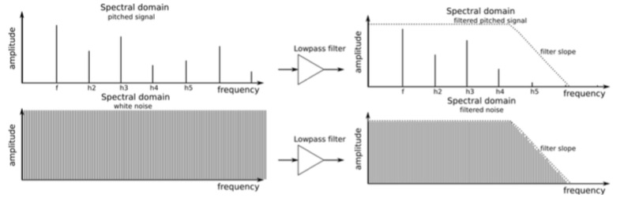

A tutorial for learning the basics of subtractive synthesizers
Filter
What is a filter?
In general, a filter follows the oscillator and signal modifiers (wave shapers), and alters the spectral content of the incoming sound. This can involve either removing (filtering out) or emphasizing (resonating) particular overtones. Filters are very important circuits whose design contributes greatly to the synthesizer’s overall sound and character. Typical filter types: Low-pass, Band-pass, and High-pass
A filter can operate in various ways or modes. In some synthesizers, the filter can operate either as a low-pass filter, a band-pass filter, or a high-pass filter. In low-pass mode, the spectral contents below a given cutoff frequency (set with the CUTOFF knob) remain unchanged, while harmonics above the cutoff frequency are attenuated. In other words, it is called low-pass mode because it passes the low frequencies below the cutoff and reduces the high frequencies above the cutoff. The correlation of attenuation to frequency determines the filter’s slope, which is measured in -dB/octave. The Low Pass filter on MicroBrute is called a 12dB per octave filter because every octave above the cutoff point is reduced by 12dB.

In band-pass mode, the cutoff frequency becomes a band’s center frequency. Sound within this band remains unchanged, while harmonics below or above the band’s range are attenuated.
In high-pass mode, partials above the cutoff frequency remain unchanged, while the partials below the cutoff are attenuated.
The cutoff frequency in any of these filter types does not have to be static; controlling it with other devices like a keyboard (keyboard tracking), an LFO or envelope generator creates dynamically-changing and interesting timbres. Resonance or emphasis
Resonance is a filter’s ability to amplify or emphasize partials that are close to the cutoff frequency, thus creating a peak in the spectral response. This parameter can be increased up to a point where the filter no longer acts like a mere filter, but starts to oscillate on its own.